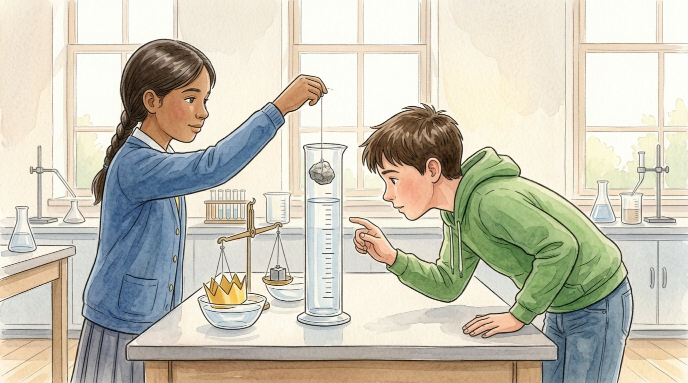

Grade 8 · Science · MS-PS1-2
The crown that was not all gold
A story about a king who suspected his goldsmith, a famous shout from a bathtub, and a young Galileo who thought the tale needed a better balance.
La corona que no era toda de oro. Un cuento sobre un rey que sospechaba de su orfebre, un famoso grito desde una bañera y un joven Galileo que pensó que la historia necesitaba una balanza mejor.
Science words you will learn
Tap a green word to see what it means.
Toca una palabra verde para ver qué significa. Con la ayuda activada, verás también la definición en español.
The story
El cuento está en inglés. Pulsa «Listen to the story» para escucharlo y toca las palabras verdes cuando no entiendas una.
Mr. Mensah put a paper crown, painted gold, on his head. "About 2,200 years ago," he said, "King Hiero II of Syracuse gave a goldsmith a lump of gold to make a crown for a temple. When the crown came back, it weighed exactly as much as the gold. But the king heard a rumor: the goldsmith had kept some of the gold and mixed in cheaper silver."
"The king asked Archimedes to find out without damaging the crown. According to the story, Archimedes stepped into a full bathtub, saw the water spill over, and ran through the streets shouting 'Eureka!', which means 'I have found it!'" "Silver is less dense than gold," said Mr. Mensah, "so a crown with silver in it takes up more space, more , than the same weight of pure gold. In water, it would push more water out of the way."
"Is that true?" asked Daniel. "We know the story from a Roman writer named Vitruvius, who wrote it about two hundred years after Archimedes," said Mr. Mensah. "In 1586, a young Galileo read it and doubted the method. The difference in the water level would be too tiny to see, he said. So he described a better way: a balance that weighs things in water."
Then the class measured. Selena filled a graduated cylinder to 50 milliliters and lowered in a rock. The water rose to 70. "The rock pushed 20 milliliters of water up, so its volume is 20 cubic centimeters," said Israel. "That's ." The scale said the rock's mass was 54 grams. " is mass divided by volume," said Mr. Mensah, "so 54 divided by 20 is 2.7 grams per cubic centimeter."
"Is that gold?" asked Elías, hopefully. Mr. Mensah laughed and pointed to a chart. "Every pure has its own density. Gold is about 19.3 grams per cubic centimeter, and silver is about 10.5. A gold ring and a gold bar have the same density, so density is a : it can identify a substance no matter how big the piece is."
Finally, he hung the paper crown, with a hidden weight inside, on one side of a balance and a small heavy block on the other. In the air, the balance was level. Then he lowered both sides into bowls of water, and the crown's side rose. "The crown takes up more space, so the water gives it a bigger , a bigger push up," said Salma. "It isn't as dense as the block."
"So what happened to the goldsmith?" asked Athena. "Vitruvius says the test showed that silver had been mixed in," said Mr. Mensah, "and the goldsmith was caught."
Selena took the paper crown off Mr. Mensah's head and put it on her own. Sophia wrote in her notebook: Weight can fool you. Density tells the truth.
Glossary
- density
- The mass of a substance divided by its volume. It tells how tightly matter is packed.
- densidad: La masa de una sustancia dividida entre su volumen. Indica qué tan apretada está la materia.
- volume
- The amount of space an object takes up.
- volumen: El espacio que ocupa un objeto.
- displacement
- The water that an object pushes out of the way when you put it in. Its volume equals the object's volume.
- desplazamiento: El agua que un objeto aparta cuando lo sumerges. Su volumen es igual al del objeto.
- substance
- A kind of matter with the same makeup all the way through, like pure gold or pure water.
- sustancia: Un tipo de materia con la misma composición en todas sus partes, como el oro puro o el agua pura.
- characteristic property
- A property, like density or melting point, that stays the same for a substance no matter how much of it you have. It helps identify the substance.
- propiedad característica: Una propiedad, como la densidad o el punto de fusión, que no cambia en una sustancia sin importar cuánta haya. Ayuda a identificarla.
- buoyant force
- The upward push of water on an object in it. Objects with more volume get a bigger push.
- fuerza de empuje: El empujón hacia arriba del agua sobre un objeto sumergido. Los objetos con más volumen reciben un empujón mayor.
Questions
Choose the correct answer. If you make a mistake, the story shows you where the answer is.
Elige la respuesta correcta. Si te equivocas, el cuento te muestra dónde está la respuesta.
-
Question A. Why would a crown with silver in it take up more space than pure gold of the same weight?
¿Por qué una corona con plata ocuparía más espacio que oro puro del mismo peso?
Silver is less dense than gold, so the same weight of a gold-and-silver mix takes up more volume.
-
Question B. Why did the young Galileo doubt the bathtub method?
¿Por qué el joven Galileo dudó del método de la bañera?
Galileo thought the difference in water level would be too small to see, so he described a balance that weighs things in water.
-
Question C. How did the class find the rock's volume?
¿Cómo encontró la clase el volumen de la piedra?
The water rose from 50 to 70 milliliters, so the rock's volume is 20 cubic centimeters: displacement.
-
Question D. Why is density a characteristic property?
¿Por qué la densidad es una propiedad característica?
A gold ring and a gold bar have the same density, so density can identify a substance.
-
Question E. Why did the crown's side rise when both sides went into the water?
¿Por qué subió el lado de la corona cuando los dos lados entraron en el agua?
The crown is less dense and takes up more volume, so the water gives it a bigger buoyant force.
Challenge: explain your thinking
Analyze data
A mystery metal cube has a mass of 193 grams and a volume of 10 cubic centimeters. A second cube has a mass of 105 grams and the same volume. Use density to identify each metal, and explain how you know.
Analiza datos. Un cubo de un metal misterioso tiene una masa de 193 gramos y un volumen de 10 centímetros cúbicos. Un segundo cubo tiene una masa de 105 gramos y el mismo volumen. Usa la densidad para identificar cada metal y explica cómo lo sabes.
Answer in your notebook or talk it over with a classmate. Use evidence from the story.
Responde en tu cuaderno o coméntalo con un compañero. Usa evidencia del cuento.
Check your thinking
First cube: 193 ÷ 10 = 19.3 grams per cubic centimeter, the density of gold. Second cube: 105 ÷ 10 = 10.5 grams per cubic centimeter, the density of silver. The cubes have the same size but different densities, and density is a characteristic property, so it identifies the substance.